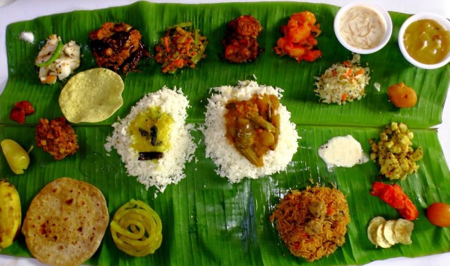
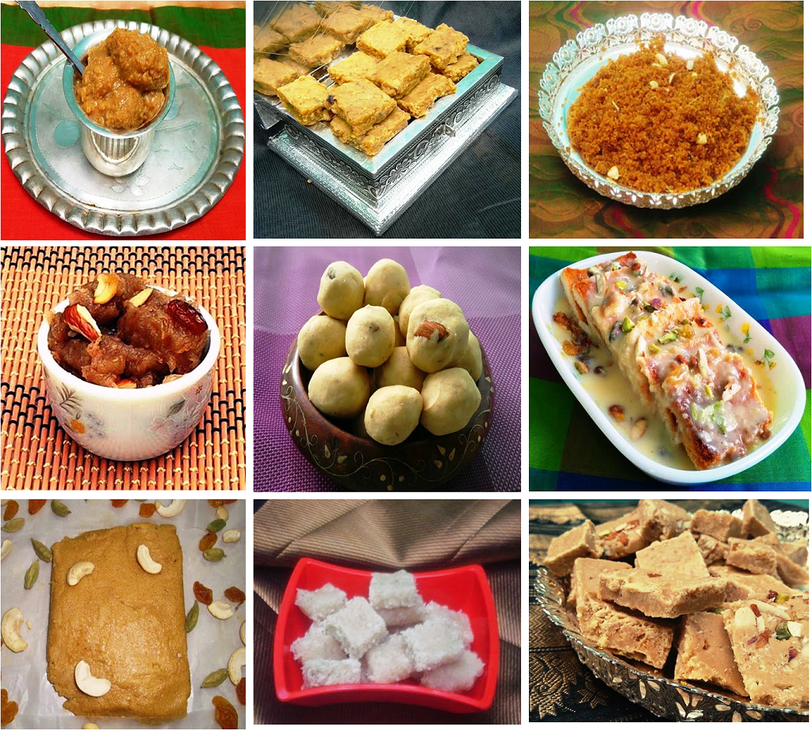

CHETTINAD CUISINE

Chettinad is the region popularly called as land of the Nagaraththar or the successful Trading Community of Chettiars. CHETTINAD cuisine is very aromatic, Spicy and Rich in strength
More..TAMILNADU CUSINE
Comprises of pre-dominantly Rice Oriented Dishes. Other Grains, Lentils, Vegetables and Spices add to their taste and aroma
More..SNACKS / SWEETS
Generally a Full Course of meal is not complete without a Desert. The Desert comprises of Payasam, Kheers [called in North India] Juices and extremely delicious Sweets
More..TANDOOR

Tandoor may not find its root from the house hold kitchen of Tamil Nadu, but occupies the tables of a Dining room very often both at Home and in a Restaurant
More..